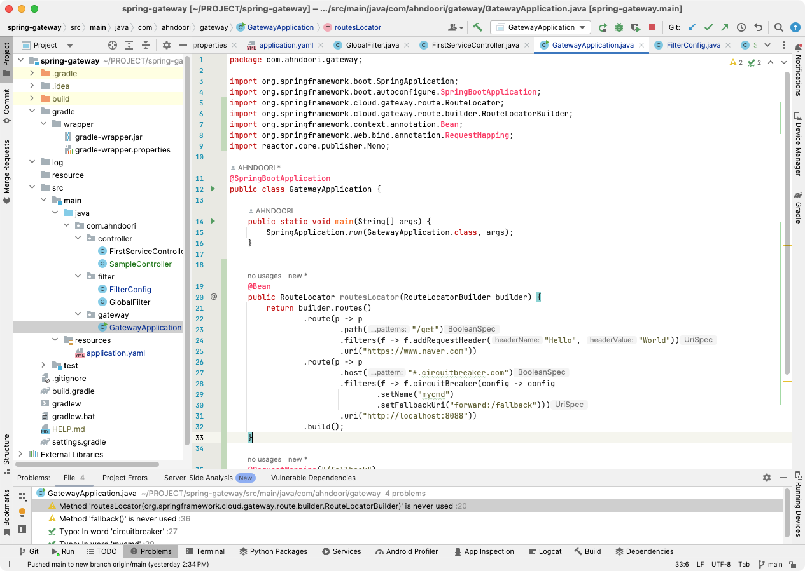
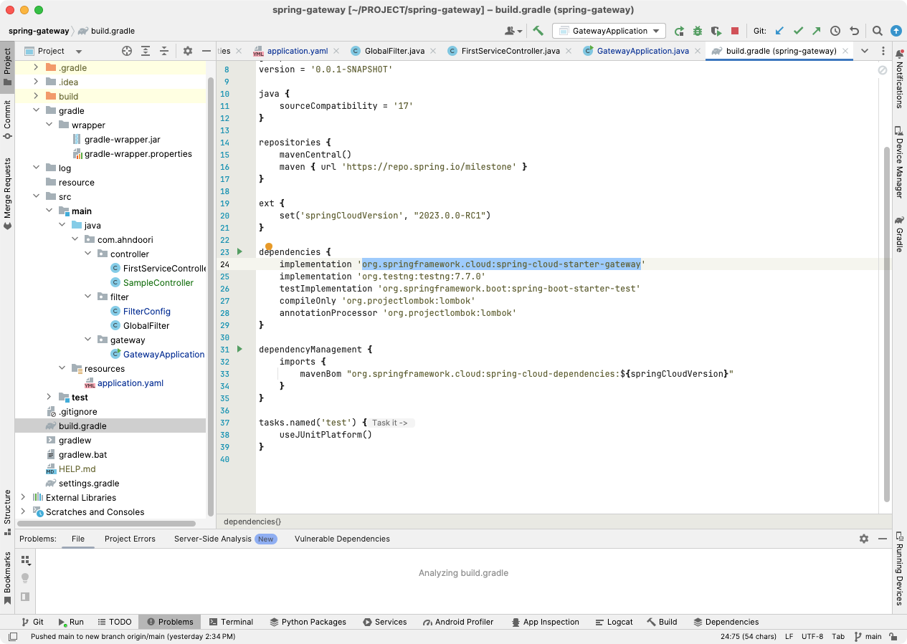
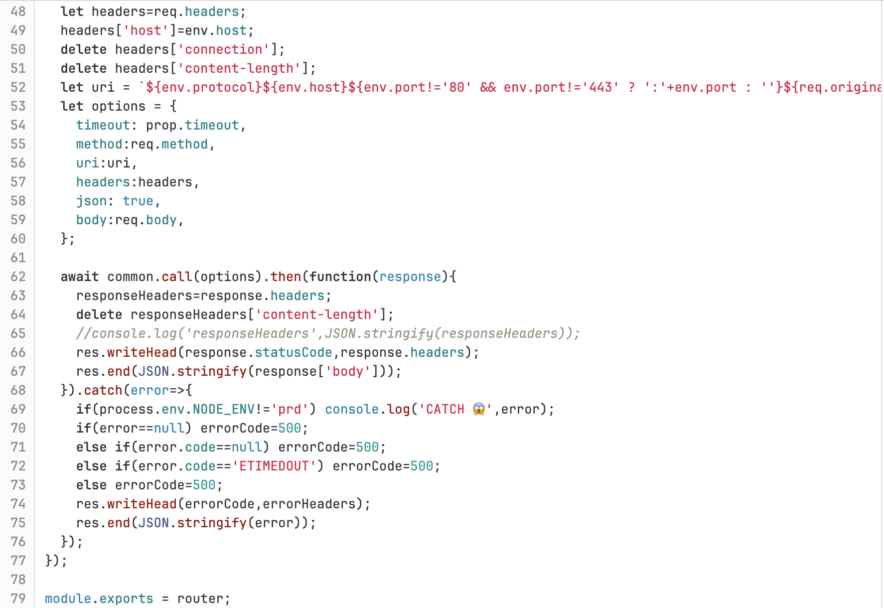
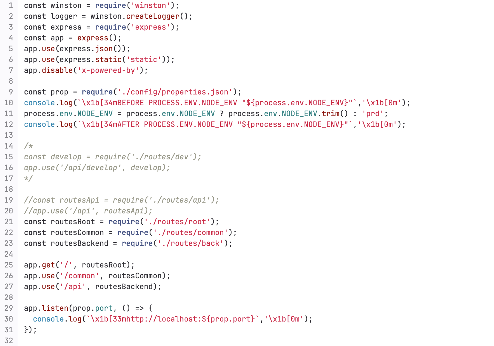
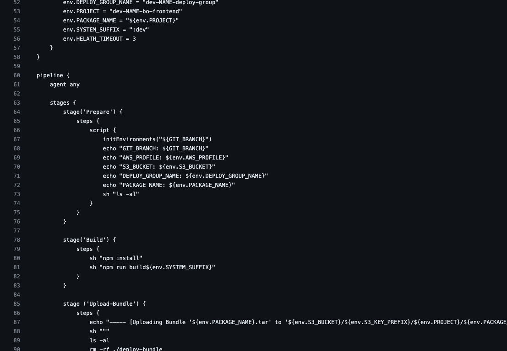
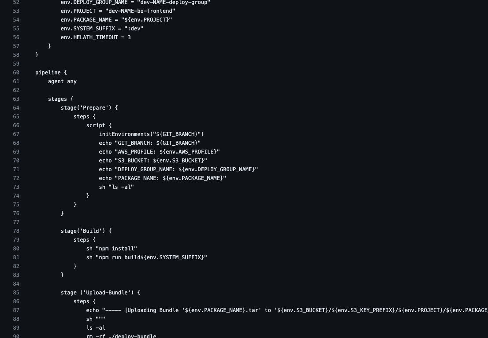

Technique & Skills
Application Architecture
JAVA, Spring, SpringBoot
NodeJS, Express, Relay
그래픽 편집
Spring Cloud Gateway


NodeJS Relay


Jenkins Deployment Process (CI/CD)
 

AWS의 CodeCommit, CodePipeline, CodeDeploy로 무중단 배포 가능,
다른 클라우드의 비슷한 배포시스템으로도 구축 가능
kaudo@msn.com